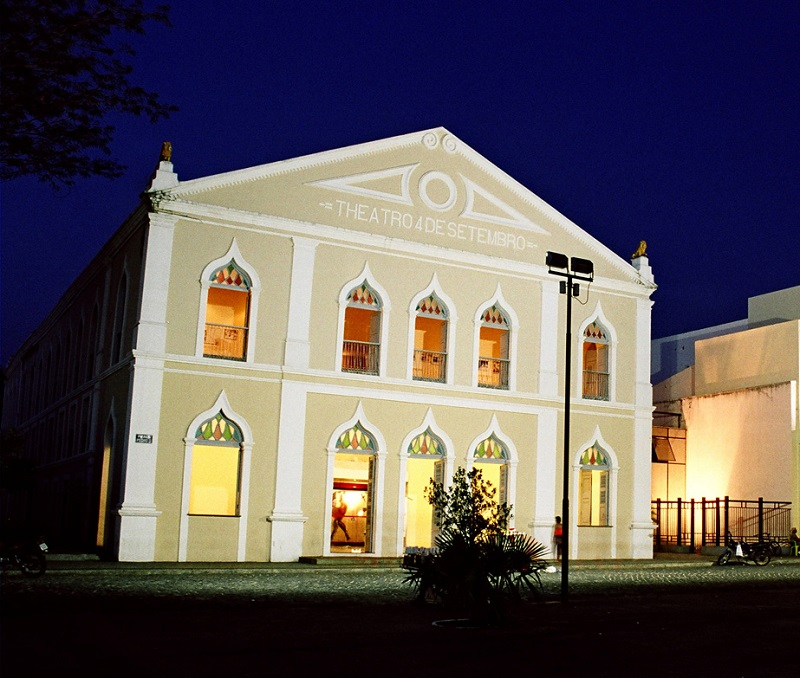
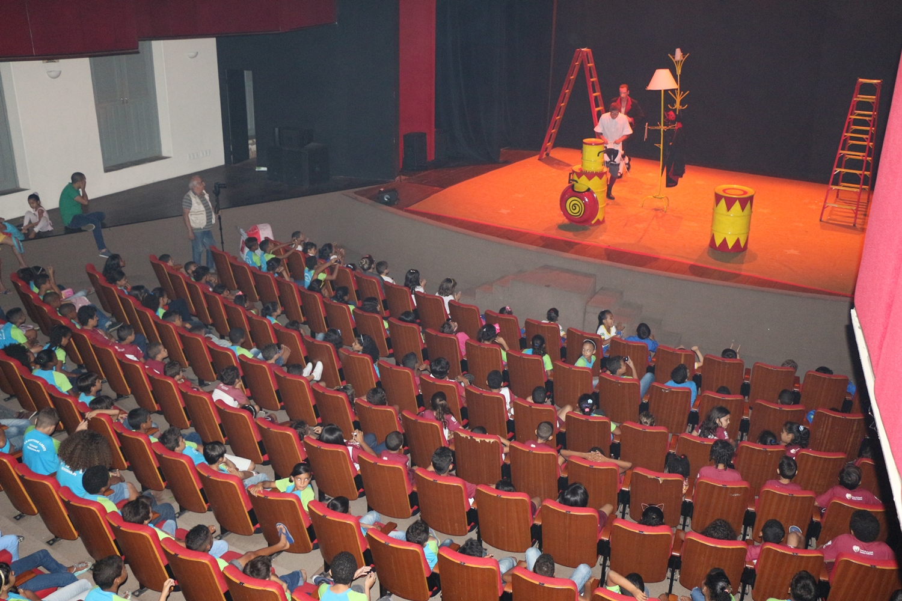
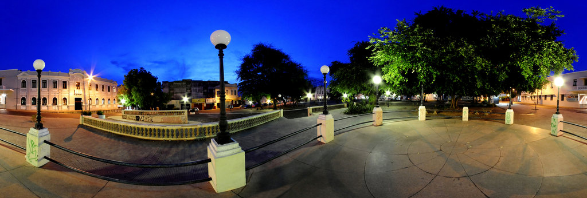
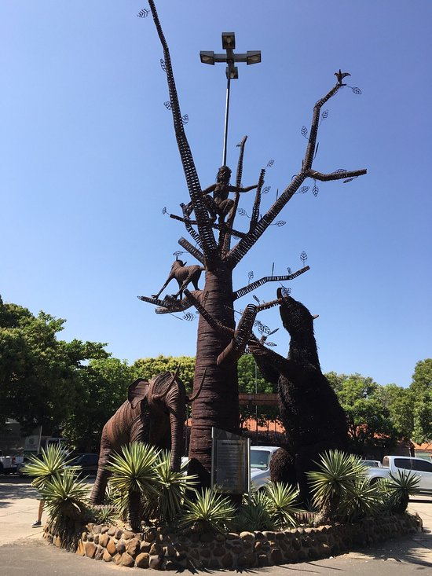
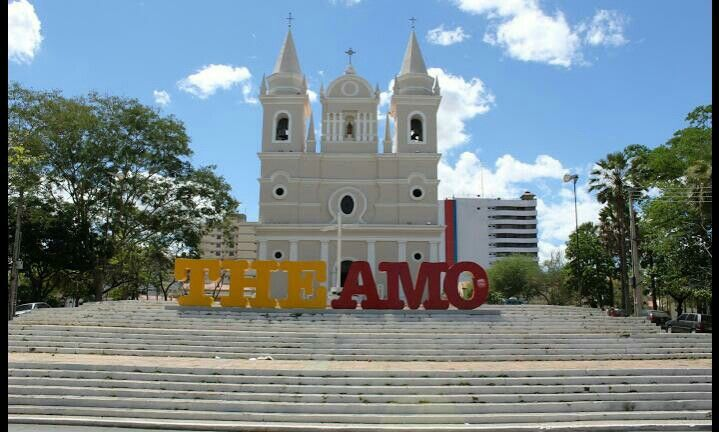
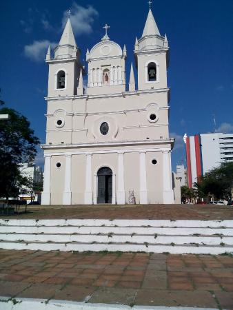

O Teatro 4 de Setembro conserva uma fachada com arquitetura de inspiração portuguesa e detalhes greco-romanos. Esta localizado na praça Praça Pedro II, no Centro da capital teresinense e é um dos principais palcos para as artes cênicas no Estado.

O teatro
A ideia de construção do teatro foi de um grupo de senhoras e da Primeira Dama do estado, que ansiavam por uma casa de espetáculos confortável e moderna para nova capital. O então Presidente da província do Piauí, Theophilo dos Santos, iniciou a obra em 4 de setembro de 1889.
A planta do teatro foi projetada pelo engenheiro civil Alfredo Modrak, e a colocação da pedra fundamental no dia 21 de setembro de 1888. Com Proclamação da República do Brasil, as obras não tiveram continuidade em virtude dos acontecimentos políticos do país.
Dia 21 de abril de 1894, foi inaugurado o teatro, em concorrida solenidade e aberto a visitação pública, apesar de ainda não possuir cenários, camarins, mobiliário e decoração. Em 1952, passou por reforma, sendo preparado para sediar as comemorações do primeiro Centenário.

Apresentação no teatro Interior do teatro
Centro de Artesanato Mestre Dezinho
Centro de Artesanato
Localizado na região central de Teresina, o Centro de Artesanato Mestre Dezinho, é um espaço dedicado ao artesanato e à produção e comercialização da arte piauiense. Construído por volta de 1911, o ponto turístico integra o Complexo Cultural, que engloba a Praça Pedro II, o Theatro 4 de Setembro e o Centro Cultural Clube dos Diários, um importante roteiro que conta a história do Piauí e da nossa capital.

Visão em 360°
Antes de ser transformado em centro cultural, o prédio histórico era a sede do Quartel Militar, e foi durante a gestão do governador Lucídio Portela, em 1981, que o espaço se tornou um local para venda de peças de artesanato produzidas pelos artesãos piauienses.
O que você encontra no Centro de Artesanato?
Auditório Mestre Expedito;
Lojas para comercialização de produtos artesanais;
Pátio interno para estacionamento;
Palco para shows artísticos e culturais;
Restaurante de comidas típicas;
Espaço Buriti (oficina aberta);
Monumento em ferro da Árvore da Macrofauna;
Monumento em homenagem ao vaqueiro piauiense;
Jardim da História;
Escada das lendas;
Monumento da imagem de Nossa Senhora da Vitória, Padroeira do Piauí;
45 painéis retratando a história do Piauí desde a colonização;
Escola de Dança do Piauí;
Escola de Música;
Agência do Empreendedor.

Monumento
Igreja de São Benedito

Igreja de São Benedito
A Igreja de São Benedito foi construída entre 1874 e 1886 pelo missionário capuchinho italiano Frei Serafim de Catânia, na elevação conhecida como Alto da Jurubeba, limite oriental da cidade, hoje o início da Avenida Frei Serafim. É uma imponente edificação, com torres que se elevam a mais de quarenta metros de altura.

Frente da Igreja
Em estilo toscano, seguiu rigorosamente o modelo da basílica medieval, com fachada trabalhada voltada para o oeste, planta em cruz latina e abside posterior ao altar-mor, com alto zimbório e majestosa escadaria de pedra que leva a seu adro. Uma estátua em tamanho natural do santo padroeiro encontra-se em seu frontispício, entre as torres sineiras. Suas portas, obra de Sebastião Mendes, tombadas pelo Patrimônio Histórico Nacional, são feitas de jacarandá e cedro, trabalhadas em motivos florais.